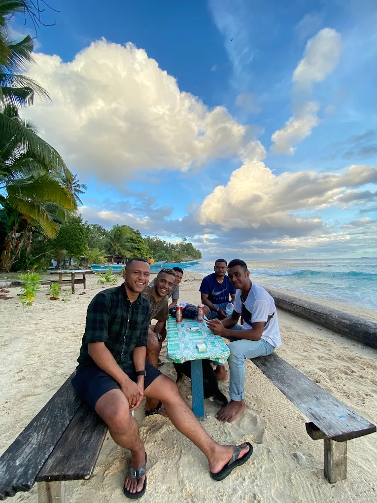

Biak Island: Papua’s Gateway to Coral Gardens & Living Heritage
Welcome to Biak (Kepulauan Biak), where clear water, colorful coral, and warm island culture
meet poignant WWII history. Use this page to discover must-do experiences and plan a respectful, memorable trip.
Quick Facts
Location: Cenderawasih Bay, Papua (Indonesia)
Best time: Generally dry & calm seas: May–October
Known for: Snorkeling, birdlife, caves, WWII relics
Experiences & Photo Highlights
Top 5 Experiences
Snorkel & dive among vibrant hard corals and reef fish along Biak’s fringing reefs.
WWII heritage at caves and coastal sites that tell the island’s 1944 campaign story.
Birding at dawn: watch for parrots, hornbills, and endemics in coastal forest.
Blue caves & lagoons with striking limestone pools perfect for a cool dip.
Markets & culture—taste smoked fish, sago, and meet friendly Biak islanders.
Photo Highlights

Soryar BeachWafsarak WaterfallSamares Blue Pond